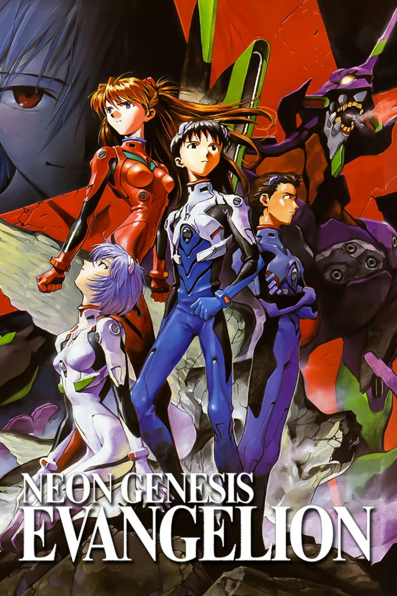

UNOFFICIAL FAN STORY · CHAPTER 01
Neon Genesis Evangelion
A young pilot faces a simulation that responds to fear, discovering that asking for help is a form of courage rather than failure.
Chapter One: A New Beginning
Shinji entered the simulator expecting a simple training run. Instead, the virtual city changed whenever he panicked, filling the streets with false alarms and blocked routes.
He tried to handle every problem alone and failed the exercise twice. On the third attempt, he asked the control room to explain the patterns. His teammates noticed that the alarms were distractions and mapped a clear route together.
The city settled into silence as Shinji followed their plan. The instructor explained that the machine was designed to test communication under pressure, not to punish mistakes.
Shinji left the cockpit tired but relieved. Courage, he realized, did not mean never feeling afraid. It meant speaking up before fear made every decision for him.
This is an unofficial, original fan-made story and is not affiliated with the official creators or publishers.